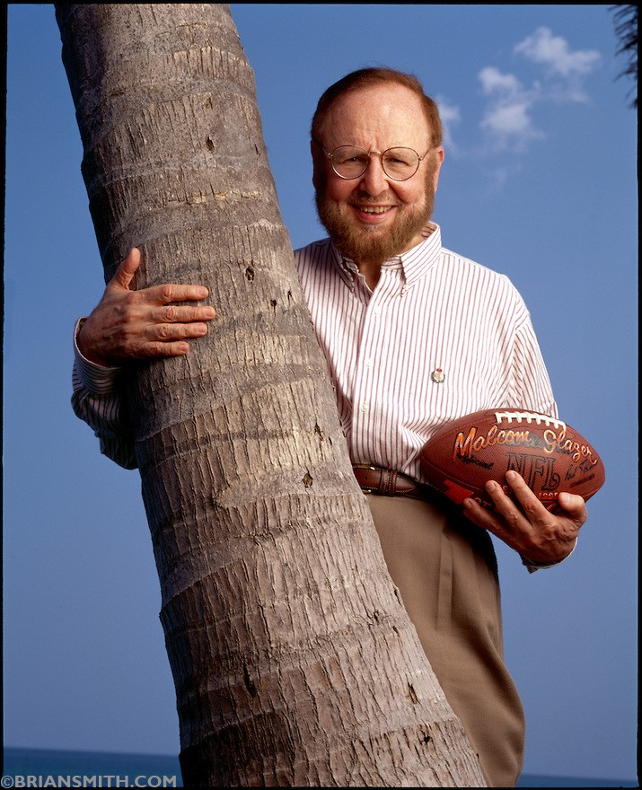

Chương 34

háng năm, 2005, Malcolm Glazer và các con mua lại cổ phần của Magnier và McManus. Tháng sáu, gia đình tài phiệt Mỹ hoàn tất vụ thôn tính Manchester United. Từ một công ty đại chúng, United PLC trở thành sở hữu riêng của nhà Glazer. Khắp Manchester, và khắp cả nước Anh, người hâm mộ Quỷ Đỏ nổi lên biểu tình chống đối dữ dội. Hình nộm Malcolm Glazer bị đem ra đốt cháy. Khi ba người con trai của ông ta từ Mỹ sang thăm Old Trafford, họ phải đến thật sớm, về thật trễ, chuồn theo lối cửa hậu để tránh cơn thịnh nộ từ các fan. Mỗi khi đi đó đi đây, cả ba phải thuê hàng đống vệ sỹ và cảnh sát đi theo bảo vệ. Sợ bị “khủng bố”, địa điểm các quý tử Glazer ở được giữ bí mật hoàn toàn[1].
Vì sao Malcolm Glazer bị phản đối dữ dội? Thứ nhất, người ta không muốn thấy một CLB có truyền thống lâu đời như Manchester United lọt vào tay tài phiệt nước ngoài. Thứ hai, Glazer không phải Abramovich. Abramovich là siêu tỷ phú với tài sản trên chục tỷ đô la, Glazer thậm chí chưa có nổi một tỷ. Hơn nữa, Abramovich đam mê bóng đá thật sự, còn Glazer chỉ khoái trò bóng bầu dục đầy bạo lực của Mỹ. Abramovich sẵn sàng chịu lỗ, liên tục bơm tiền cho CLB để giành danh hiệu, còn Glazer chỉ dùng CLB như một công cụ làm ăn kiếm chác. Với ông chủ Glazer, đừng hòng có chuyện chi ra 100 triệu mỗi năm cho việc mua cầu thủ. Ngược lại, vì Glazer phải đi vay tiền để mua United, nên khi đã trở thành chủ nhân ông tại Old Trafford, ông ta dùng lợi nhuận của United để trả nợ lãi suất. United PLC đang là một công ty có tình hình tài chính vô cùng lành mạnh, bỗng nhiên biến ra con nợ! Tóm lại, có thể nói một câu thế này: Trong khi Abramovich bơm máu cho đội bóng của mình, Glazer đóng vai trò hút máu.
Trước cuộc xung đột giữa Glazer và người hâm mộ, Sir Alex giữ quan điểm tương đối trung lập: Tôi là HLV, tôi chỉ huấn luyện, ai là chủ CLB thì tôi vẫn cống hiến hết mình. Về phía nhà Glazer, trong vài năm đầu, họ còn lo cải thiện quan hệ quần chúng, chưa dám dở trò “ma cà rồng”, nên United vẫn đi đúng hướng. Thêm vào đó, phần vì chẳng biết gì về bóng đá, phần vì muốn lấy lòng Sir Alex, hòng nhờ Sir nói tốt giúp với các fan, họ để cho HLV trưởng toàn quyền về mặt chuyên môn, không can thiệp gì.
Đã bổ sung tuyến tiền vệ với Ronaldo, tiền đạo với Rooney, năm nay, Sir Alex đầu tư cho hàng thủ bằng hợp đồng với thủ môn kỳ cựu Edwin Van der Sar. Từ ngày Peter Schmeichel rời Old Trafford, Sir đã thử nghiệm cả thảy 10 người đóng thế: Van der Gouw, Mark Bosnich, Nick Culkin, Massimo Taibi, Paul Rachubka, Andy Goram, Fabien Barthez, Roy Carroll, Ricardo, và Tim Howard. Cả 10 đều thất bại. Phải đến Van der Sar, lời nguyền thủ môn mới được hóa giải. Van der Sar không phân phối bóng tốt như Schmeichel, cũng không “hầm hố” bằng, nhưng về các kỹ năng khác, anh không hề kém cạnh. Nếu Schmeichel được 10, thủ thành người Hà Lan cũng được ít ra là 8.5, mà được 8.5/10 của Schmeichel thì đã quá đủ là “thiên hạ đệ nhất”. Tuổi 35 của Van der Sar cũng không phải nhân tố gây trở ngại, vì thủ môn thi đấu tốt đến ngoài 40 là thường.
Đến cùng Van der Sar có tiền vệ người Hàn Quốc Park Ji Sung. Đây là vụ chuyển nhượng mang nhiều tính thương mại: Lực lượng CĐV của Manchester United tại Á Châu vốn rất đông đảo, ký hợp đồng với một cầu thủ da vàng là cách tốt nhất để củng cố quan hệ với họ. Tuy không thật sự nổi trội, Park luôn thi đấu năng nổ, cần cù, để lại ấn tượng tốt trong những năm ở Old Trafford. Ở chiều ngược lại, Phil Neville phải nói lời chia tay với anh trai Gary, chuyển sang chơi cho Everton.
United mở đầu mùa 2005-2006 khá tốt, thắng ba trận liên tiếp, nhưng lần lượt Gabriel Heinze rồi Roy Keane đều chấn thương nặng, phải nghỉ dài hạn. Đội hòa hai trận liền với Manchester City và Liverpool, bắt đầu bị Chelsea tạo khoảng cách trên bảng xếp hạng. Tuy chỉ mới tháng chín, CĐV bắt đầu nóng ruột, bởi lòng kiên nhẫn của họ đã vơi đi rất nhiều sau mùa 04-05 trắng tay. Đâu đâu người ta cũng hô hào United nên trở về với chiến thuật 4-4-2, với Rooney đá cặp cùng Van Nistelrooy, hơn là duy trì sơ đồ 4-5-1: Nistelrooy đá cắm, Rooney chơi lệch cánh. Trận gặp Blackburn tại Old Trafford, Sir Alex cất Rooney trên ghế dự bị, khiến các fan giận dữ. Suốt cả trận, họ hô vang “Rooney! Rooney! 4-4-2! 4-4-2!”. Khi United thua cuộc 1-2, một số fan thậm chí hô hào đả đảo Sir. Lần đầu tiên kể từ năm 1989, mới lại có chuyện Sir bị công kích ngay tại sân nhà.
Tuy vậy, người hâm mộ chẳng phải không biết điều. United từ một CLB có nguy cơ xuống hạng vươn lên được thành thương hiệu bóng đá lớn nhất toàn cầu là nhờ có ai? Chẳng phải một tay Sir Alex gây dựng sao? Sau giây phút bốc đồng lỡ miệng, ai ai cũng hối hận. Trong trận kế tiếp gặp Benfica ở Cúp C1, khoảng phút thứ 16, khắp SVĐ bỗng vang lên những tiếng hô:
-Hãy đứng dậy nếu bạn yêu Fergie!
-Hãy đứng dậy nếu bạn yêu Fergie!
Thế rồi ngàn người như một nhất loạt đứng lên. Ta được chứng kiến một quang cảnh vô cùng xúc động tại Nhà Hát Những Giấc Mơ: 60 ngàn con người cùng đứng, vỗ tay, và hát lời xin lỗi nhà thuyền trưởng vĩ đại!
Có điều, phong độ Quỷ Đỏ vẫn chưa được cải thiện. Họ thi đấu rất thiếu lửa ở cả giải ngoại hạng lẫn Cúp C1. Không tiện chỉ trích Sir Alex thêm nữa, lại nghe phong thanh đâu đó chính Carlos Queiroz là người “dụ” Sir chơi 4-5-1, các CĐV tập trung phê phán vị trợ lý người Bồ Đào Nha. Trong khi đó, United tiếp tục lăn dốc, thua thê thảm 1-4 trước Middlesbrough, rớt xuống tận hạng bảy, thua Chelsea đến 13 điểm. Và rồi, đùng một cái, xảy ra sự cố Roy Keane.
Tại Old Trafford, Roy Keane chính là người giống Sir Alex nhất về mặt tính cách: Đầy tham vọng, hừng hực quyết tâm, nóng nảy như lửa. “Keane là động lực và cảm hứng của United, một tiền vệ có khả năng đọc thế trận số một”, Sir viết, “Khi nhìn Keane, tôi thấy trong cậu ta sự khát khao chiến thắng và khát vọng vươn đến hoàn hảo của chính tôi”. So với thầy, xem ra Keane còn khó tính hơn. Phóng viên mỗi lần phỏng vấn Keane là đến khổ, bởi trong mỗi câu hỏi không được thiếu chữ “làm ơn”, sau mỗi lần Keane trả lời, không được phép quên “cám ơn”. Hễ nói năng thiếu hai chữ đó, liền bị Keane mắng là bất lịch sự.
Trong đời, người duy nhất Roy Keane kính phục là Sir Alex; ngoài Sir ra, không ai quản nổi một cá tính mạnh như anh. Các đời HLV ĐTQG Ireland bị Keane khinh như mẻ. Hồi World Cup 2002, anh mắng vào mặt HLV McCarthy sa sả suốt tám phút liền, chửi ông là “thằng l…”, rồi “đồ HLV rác rưởi”. Mắng đã đời, Keane quay đi, không quên thòng thêm một câu: “Cầm cái World Cup mà đút vào đít. Mẹ! Ông đây chỉ nghe lời một mình ngài Alex thôi!”
Trên sân bóng, Keane làm tốt vai trò thủ lĩnh, truyền cảm hứng cho mọi người, song ngoài đời, anh sống lạnh lùng, ít thân với ai. Càng lớn tuổi, anh lại càng khó tính, cộc cằn hơn. Tính cách giản dị, anh không ưa ra mặt những đồng đội nào hay xài hàng hiệu, thích sống xa hoa. Gary Neville có lần sắm được “dế” mới, nhắn tin cho bạn bè “Đây là số mới của Gary nhé”. Vài phút sau, chàng hậu vệ nhận được câu trả lời từ Keane “Thế thì làm sao?”
Sau trận United-Middlesbrough 1-4, khi trả lời phỏng vấn MUTV, Roy Keane kịch liệt chỉ trích các đồng đội, từ Rio Ferdinandđến Kieran Richardson, từ Alan Smith đến John O’Shea, cả Van der Sar cũng không chừa. MUTV là kênh “tuyên truyền” của Manchester United, dĩ nhiên họ không thể phát những lời “tiêu cực” của Keane, nên đành bỏ chương trình phỏng vấn hàng tuần, thay vào chương trình khác. Song có chuyện gì mà qua được mắt cánh nhà báo. Không thấy cuộc phỏng vấn như thường lệ, các phóng viên lập tức đánh hơi thấy vấn đề, liền lao vào điều tra. Sir Alex ra lệnh, cấm không ai được cung cấp thông tin cho truyền thông. Cái khó là Old Trafford có đến 500 nhân viên, làm sao kiểm soát từng người cho nổi. Một trong những nhân viên đó đã bán tin tức cho tờ Daily Mirror với giá 15 000 bảng, để rồi ngày hai tháng 11, 2005, độc giả đọc thấy trên báo này dòng chữ “độc quyền trên toàn thế giới”, bên dưới là nguyên văn bài trả lời phỏng vấn của Roy Keane.
Đến nước này, Sir Alex buộc phải “trảm” người thủ quân lâu năm. Điều Keane nói ra thật tình chẳng tệ hơn điều Sir nói trong phòng thay đồ. Nhưng khác biệt chính nằm ở đó: Những gì trong phòng thay đồ, không được phép tiết lộ ra ngoài. Để giữ đoàn kết nội bộ, Sir cho Keane ra đi theo dạng tự do, đến với Celtic. “Là HLV, thường ai cũng có đệ tử ruột mà mình thương mến nhất”, ông nói, “có điều cần phải chí công vô tư, không để tình riêng ảnh hưởng đến công việc”.
Dù mỗi người một phương, Sir Alex và Roy Keane vẫn giành cho nhau tình cảm nồng hậu. Sáu tháng sau, Sir tổ chức trận đấu tôn vinh Keane, giữa Manchester United và Celtic. Keane chơi cho mỗi đội một hiệp[2].
Tiếp tục với những diễn biến của mùa 05-06, có vẻ việc bị Middlesbrough hạ nhục làm các cầu thủ cảm thấy xấu hổ, thúc đẩy họ phải nỗ lực hơn lên. Ngày sáu tháng 11, đúng dịp kỷ niệm 19 năm Sir Alex dẫn dắt United, CLB xuất sắc cho đội đầu bảng Chelsea đo ván, với bàn thắng duy nhất của Darren Fletcher[3]. Tiếng còi dứt trận vang lên, Sir quay lên khán đài, cúi đầu cảm tạ. Người hâm mộ đáp trả bằng cách hát vang:
-Ai cũng yêu Alex Ferguson!
-Ai cũng yêu Alex Ferguson!
Sau trận hạ Chelsea, Quỷ Đỏ lấy lại niềm tin, liên tiếp chiến thắng, leo lên được hạng nhì. Nhưng tại Cúp C1, mọi chuyện vẫn tồi tệ. Trong một bảng đấu không quá khó với Villareal, Benfica và Lille, United đứng hạng bét, đá sáu trận chỉ thắng một, ghi vỏn vẹn ba bàn. Lần đầu tiên trong 10 năm, đội mới bị loại từ vòng đấu bảng, khiến báo chí đoán già đoán non về việc BLĐ sắp sa thải Sir Alex, thay thế bằng Guus Hiddink hay Paul Le Guen.
Đến kỳ chuyển nhượng mùa đông, United bổ sung hai nhân vật quan trọng: trung vệ người Serbie, Nemanja Vidic (7 triệu bảng) và hậu vệ cánh người Pháp Patrice Evra (5.5 triệu). Bù lại, đội mất Alan Smith ít nhất một năm: Anh bị gãy chân do cố truy cản cú sút của John Arne Riise trong trận đấu Cúp FA với Liverpool tại Anfield. Khi Smith lăn lộn nằm trên sân, CĐV Liverpool hò reo ăn mừng như thể đội nhà vừa ghi bàn. Thấy Sir Alex nhìn lên khán đài, họ càng làm già, í éo giả tiếng xe cứu thương, rồi hát mấy câu tự chế:
-Ôi John Arne Riise ơi! Kể chúng tớ nghe đi, cậu làm thằng kia gãy giò như thế nào!
Vậy đó! Fan Liverpool ghét United là điều xưa như trái đất, nhưng từ khi đội bóng thành Man soán ngôi CLB yêu thích của họ, họ lại càng ghét tợn. Thôi thì họ làm đủ trò tại Anfield, từ giang tay làm máy bay chế giễu thảm họa Munich 1958, đến…tè vào bọc nylon quẳng xuống đầu CĐV Quỷ Đỏ ngồi bên dưới! Nhiều khi, các fan Liverpool giả vờ hâm mộ, cầm sổ đến xin chữ ký cầu thủ United, để rồi xé tan sổ đi, trong sự bẽ bàng của đối phương.
Smith gãy chân, còn United nói lời chia tay Cúp FA. Tại giải ngoại hạng, hy vọng lên ngôi cũng tan biến với thất bại 0-3 trước Chelsea vào cuối tháng tư. Sau 90 phút, các cầu thủ Chelsea chạy vòng quanh sân, ăn mừng cúp bạc. CĐV trên khán đài Stamford Bridge đồng thanh:
-Man United là đội đ. nào?
-Man United là đội đ. nào?
-Man United là đội đ. nào?
-Chỉ có Quân Đoàn Xanh vững bước tiến lên
Thất vọng! Nhưng so với mùa trước, đã có tiến triển. Quỷ Đỏ ít nhất đã chiếm ngôi á quân, không còn phải đứng hạng ba (Wayne Rooney lần thứ hai liên tiếp đoạt giải Cầu Thủ Trẻ Xuất Sắc Nhất Nước Anh). Họ cũng không trắng tay, bởi đã có Cúp LĐ. Sir Alex gây ngạc nhiên trong trận chung kết Cúp LĐ, khi để Saha đá chính thay cho Van Nistelrooy. Không phụ lòng thầy, Saha ghi một bàn, và kiến tạo hai bàn cho Rooney và Ronaldo, giúp đội thắng đậm 4-0.
Cúp LĐ không phải danh hiệu quan trọng, tờ The Times còn “chua ngoa” ví nó với…cái bô dùng đi tè, vậy mà Van Nistelrooy lại vô cùng giận dữ vì không được đá chung kết. Quan hệ giữa anh và Sir Alex từ đó rạn nứt. Giận cá chém thớt, Nistelrooy ủng oẳng với Cristiano Ronaldo trên sân tập, đập cho đàn em người Bồ sưng mặt, rồi lêu lêu: “Về mà khóc với bố mày ấy”[4]. Nistelrooy là chân sút vĩ đại trong lịch sử United, song Ronaldo mới là tương lai đội bóng. Giữa hai người, không ngạc nhiên khi Sir Alex đứng về phía Ronaldo. “Người Hà Lan bay” bị bán sang Real Madrid vào cuối mùa, với giá 10.2 triệu bảng.
Nhìn nhận một cách khách quan, tuy Van Nistelrooy có những đóng góp lớn lao cho United, việc bán anh trước mùa 2006-2007 là một quyết định đúng đắn và sáng suốt của Sir Alex. Lúc mới đến Old Trafford, Nistelrooy hoạt động khá rộng, thậm chí có lần ghi bàn sau pha lừa bóng từ giữa sân, song càng lúc anh càng thu mình vào vòng cấm địa. Hai mùa đầu tiên, anh bùng nổ dữ dội, ghi 36, rồi 44 bàn, nhưng sau đó dần dần đi xuống, đến mùa cuối cùng chỉ có 24 lần lập công.
Với sơ đồ một tiền đạo cắm của United, mọi cơ hội đều đổ dồn về Van Nistelrooy. Vậy nhưng, thời gian sau này, tiền đạo Hà Lan kém duyên đến kinh ngạc, dường như phải có đến 7-8 cơ hội, anh mới phá lưới được một lần. Con số 24 bàn nhìn qua tưởng cao, khi so với số cơ hội mới thấy là quá ít. Hơn nữa, sơ đồ 4-5-1 chỉ nhằm để phục vụ Nistelrooy, không phát huy được hết khả năng của những cầu thủ khác.
Không còn Nistelrooy, không còn 4-5-1, lúc ấy tiềm lực đội bóng mới được phát huy đến mức tối đa.

Tài phiệt Mỹ Malcolm Glazer (ảnh: Briansmith.photoshelter.com)
[1] Một nhóm CĐV cực đoan còn quyết định tẩy chay luôn đội bóng, lập ra một CLB mới, gọi là FC United of Manchester.
[2] Tiếp quản băng thủ quân từ Keane là Gary Neville.
[3] Đây là lần đầu tiên Sir Alex chiến thắng Mourinho, sau sáu phen chạm trán.
[4] Tin tức về vụ ẩu đả giữa Nistelrooy và Ronaldo bị tiết lộ ra ngoài, khiến Sir Alex tức giận. Không cần biết ai đã tiết lộ, Sir cấm tiệt, không cho học trò viết báo nữa. Rio Ferdinand và Gary Neville phải hủy hợp đồng cộng tác với The Sun và The Times.